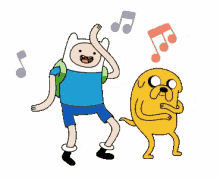

Jake o Cão
Jake o Cão é um dos personagens principais de Hora de Aventura. Ele é um híbrido de cão/metamorfo, referido pelos outros como um "cão mágico". É o maior companheiro do humano Finn, seu irmão adotivo. Jake é casado com a iriscórnia Lady Irís e tem 5 filhos.

O personagem é um grande ídolo de Finn, o acompanhando em aventuras por aí. Apesar de normalmente apresentar um comportamento infantil, Jake é extremamente maduro, constantemente dando conselhos e lições ao seus próximos. Um dos seus maiores passatempos é tocar Viola.
.

História
Nascimento
Os investigadores Joshua e Margaret saem em uma missão de encontrar uma criatura que está assombrando Dona Tromba. Durante o processo de investigação Joshua é atacado pela tal criatura, que o mordeu na cabeça. Jake mais tarde nasce da pústula que havia crescido na cabeça do seu pai, no mesmo dia que seu irmão Jermaine.
Os seus poderes de elasticidade são frutos dessa mutação que houve com o alienígena Warren Ampersand e seu pai Joshua. Embora Jake não soubesse da origem de seus poderes até "Jake, Filho das Estrelas", e antes dessa descoberta ele acreditava que havia ganhado suas habilidades ao nadar em uma poça de lama mágica quando era criança.
mais informações aqui